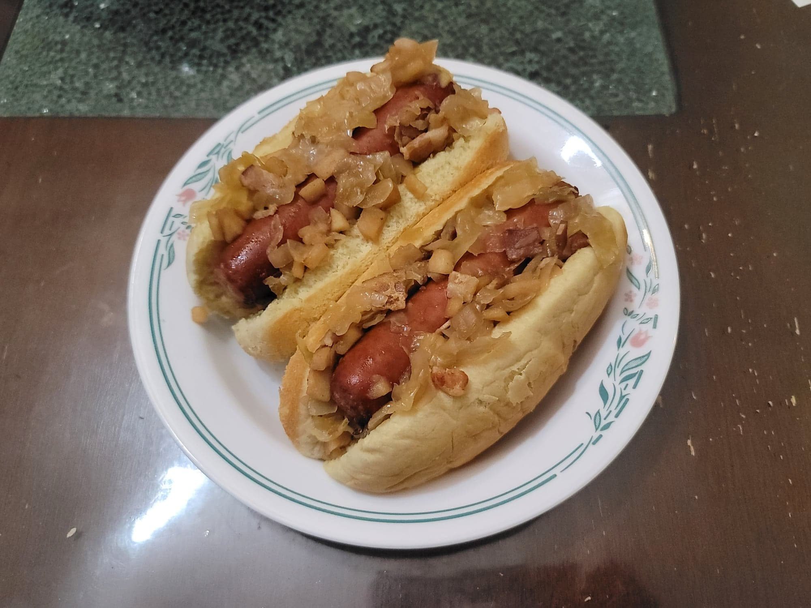

Brats with Sauerkraut

Ingredients:
- 6-8 Bratwursts
- 14 oz Sauerkraut, drained and rinsed
- 2 Apples, finely diced
- 3 strips Bacon, cooked and diced
- 1 small Onion, diced
- 1/4 cup Brown sugar
- 1 tsp Ground mustard powder
- 6-8 Hotdog buns
Instructions:
- In a large bowl, combine the sauerkraut, apples, bacon, onion, sugar, and mustard. Place the bratwursts into a slow cooker and then scoop the sauerkraut mixture over it. Set the slow cooker to low and cook for 6-8 hours, or until the internal temperature of the bratwursts is at least 160 degrees Fahrenheit.
- Once the bratwursts are done, place them into hotdog buns with some of the sauerkraut mixture. Serve hot.